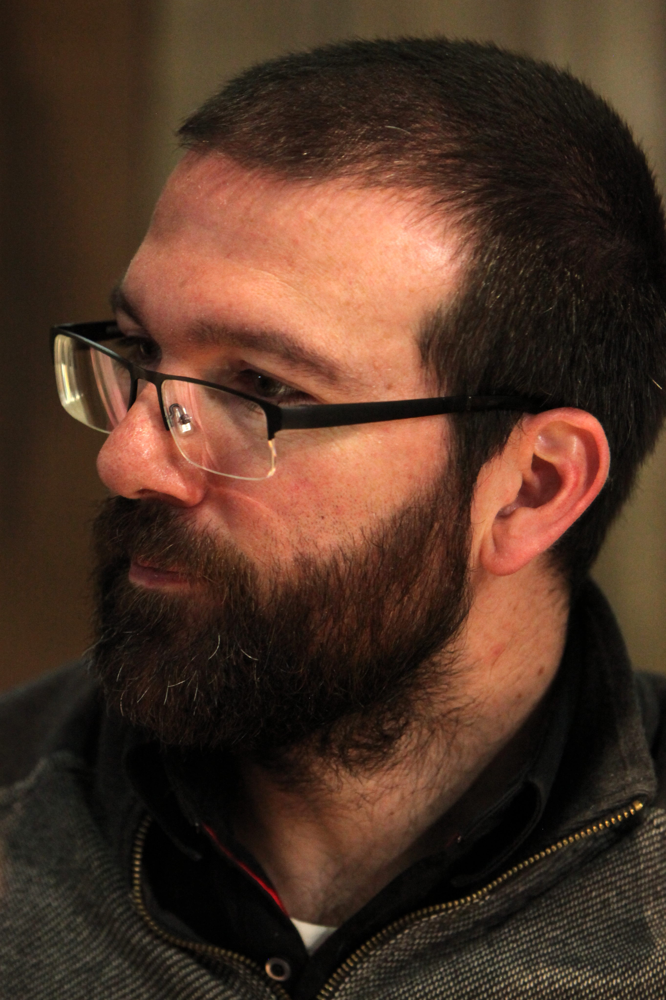
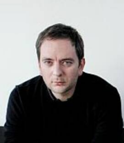

-
Qu'est ce qu'Ankama ?
Ankama est une société holding française.
Un ou une holding ou société faîtière en Suisse, également appelée société de portefeuille au Canada et en Belgique, est une société ayant pour vocation de regrouper des participations dans diverses sociétés et d'en assurer l'unité de direction.
Cela signifie que la société Ankama est divisée en de nombreuses filiales qui ont chacune leur spécialité.
-
Fondation d'Ankama
Ankama a été fondée le 15 mai 2001 à Roubaix, par trois anciens employés de l’agence de création web I-Puzzle.
-
Camille Chafer
Camille Chafer, dit Kam, né le 17 mai 1978 en France, est un concepteur de jeux vidéo.
Il est connu pour être le directeur technique d’Ankama lors de sa fondation.
-
Anthony Roux
Anthony Roux, également connu sous le pseudonyme Tot, né le 9 mars 1977 à Montreuil en France, est un scénariste de bande dessinée, de film et de série télévisée, producteur de cinéma, réalisateur, concepteur de jeux vidéo et auteur de jeux de société français.
Il prend le rôle de directeur artistique lors de la fondation d’Ankama. -
Emmanuel Darras
Emmanuel Darras est un entrepreneur roubaisien né le 8 octobre 1976. Il sera le directeur commercial et financier d’Ankama au côté d’Anthony Roux, jusqu’aux 25 janvier 2013 où il quitte son poste de directeur commercial pour devenir actionnaire minoritaire.
Laissant donc la direction à ses collègues Anthony Roux et Camille Chafer
-
-
Les débuts de la société
L’entreprise va tout d'abord commencer par fonder une agence de création web, qui fournira des services tels que la conception et l’hébergement de sites web pour des clients tels que la Redoute.
Bien que l’entreprise sous la majeure partie autofinancée par ses fondateurs une petite partie du capital d’origine (20 %) vient des aides perçue par la région, ce qui regroupe les aides de la région Nord-Pas-de-Calais et de Lille Métropole Initiative.
Les fondateurs nous révèlent plus tard que le principal objectif de cette agence de création web était de fonder un capital de départ afin de pouvoir commencer le développement de jeux vidéo. Nous pouvons d’ailleurs remarquer que de nos jours la filière web d’Ankama a été radiée, après que Ankama soit rentable avec ses départements dédiés à la création.
-
Gestion d'Ankama
-
Direction
Presidence :
- du 19 janvier 2005 au 7 janvier 2015 : Anthony Roux
- depuis le 7 janvier 2015 : société Adone (gérée par Anthony Roux depuis 2007)
Direction générale :
- du 20 août 2005 au 28 août 2013 : Emmanuel Darras
- depuis 2014 : Olivier Comte
- depuis le 14 août 2010 : Camille Chafer
Co-gérance :
- du 3 février 2009 au 14 août 2010 : Camille Chafer
- du 3 février 2009 au 18 janvier 2013 : Emmanuel Darras
-
Événement important dans l’histoire d’Ankama
En 2006 Ankama va refuser un rachat de l’entreprise par DisneyTM. Emmanuel Darras l’actuel directeur du commercial et des ficance d’Ankama, justifiera leur décision à la presse en disant :
Soit nous vendions, soit nous structurons la société pour nous donner les moyens de nous développer.
Emmanuel Darras, directeur commercial d'AnkamaL’année suivante à la japan expo 2007 lors de la présentation du court métrage ayant pour but de promouvoir la série animé Wakfu. Les représentant d’Ankama annoncent leur partenariat avec la chaîne de télévision Nolife, il expliqueront que ce partenariat a pour but de pallier au manque de budget pour la réalisation de la série wakfu.
En 2009 Ankama décide de migrer leur maison mère à Roubaix le ville ou tout a commencé. Pour ce faire, l'entreprise a décidé d’acheter une ancienne filature, ayant appartenu à Vanoutryve, se situant au 75 boulevard d'Armentières.
Le complexe de 10 000 m² permet à Ankama de réunir toutes les filiales en un même lieu. Pour encourager l'arrivée et l'installation de nouveaux employés, Ankama va fonder deux nouvelles filière :-
Ankama restaurant
Cette filière aura pour objectif de permettre aux employés de l’entreprise de manger dans un restaurant proche de leur lieu de travail.
Pour ce faire la filière ouvrira deux restaurant :- l’Ankama Restaurant.
- l'Ankama Salad Bar qui a pour objectif de fournir un moyen de restauration rapide aux employeurs.
-
Ankama Maison
Est un complexe d’appartements d'appoint ayant pour objectif de fournir des logements temporaires, permettant ainsi aux employés de venir travailler le temps qu'ils puissent d'installer dans la région.
Comme il est montrer dans l’interview d’Anthony Roux par les journaliste de Gamekult, bien que qu’Anthony Roux essayer tant bien que mal de faire en sorte que les condition de travail les plus agréables possible avec la création d’espace de détente réserver au employée ainsi que la mise à disposition de service comme une crèche, L’insatisfaction des employés français semble pousser Anthony Roux avoir un regard sur l’étranger ce qui le poussera d’ailleur a créer un autre antenne d’Ankama au Canada.
source : Lire article de Gamekult
En 2012, le cofondateur Emmanuel Darras quitte l’entreprise pour des raisons personnelles et devient donc un actionnaire minoritaire de l’entreprise. L’année suivante, son poste de directeur des finances et du commerce sera repris par Olivier Comte.
Suite au rachat de l’entreprise de développement mobile japonais Wizcorp par Ankama en 2013, Camille Chafer annonce la fondation de la filiale Ankama Japan qui sera plus tard radier en 2014 ainsi que la fondation d'une filiale Ankama Canada.
-
-
-
Un nouveau monde de l’imaginaire : Le Krosmoz
-
Dofus
10 employés en 2003. Commence à développer Dofus via le pôle Ankama Studio. Le jeu est développé en flash et entre en bêta test en octobre 2003. Le jeu sortira le 1er septembre 2004, il sera distribué sur internet. Une aide de 15 000€ du CNC aidera à le financer dans ces débuts. Il atteint un total de 3 millions de joueurs actifs à travers le monde en 2007.
En décembre 2009 après 6 ans d’activités le jeu Dofus se fait une peau nouvelle, avec la sortie de la version 2.0. En 2016 Dofus arrive sur le marché des jeux mobile avec dofus touch. -
Dofus arena

Les jeux Dofus Arena commencent à être produit en 2006, il sortira officiellement en 2010, trois ans après la sortie en beta.
Ankama reçoit le prix du public au Web Flash Festival en 2006, suite à l'annonce du début du développement du jeu.
Les serveurs du jeux seront finalement éteint en 2014 car le jeux ne rapportait pas assez. -
Ankama editions
-
Dofus Battles
-
Wakfu
En 2005 Ankama fonde une nouvelle filière Ankama Animation, pour produire la série animée Wakfu, qui se déroule dans l’univers du Krosmoz.
Bien que la sortie soit prévue pour 2007, la série commencera sa diffusion seulement le 30 octobre 2008, sur France 3, dans le programme de l'émission de jeunesse Toowam. La série est présentée au public avec un court métrage diffusé à la japan expo 2007.
Suite au succès de la série un jeu Wakfu MMORPG créé par Ankama Games, il sortira le février 2012 avec 4 ans de retard. Bien qu’il soit sorti avec du retard, le jeu est toujours en activité de nos jours.
-
Un jeux de carte à collectionner
En 2009 sortie d’un jeux de carte digital regroupant les personnages du krosmoz Wakfu TCG
Les services permettant de jouer au jeux seront arrêtés en décembre 2011 pour plusieurs raisons.
Selon Ankama les règles trop complexes empêchait une grande partie des fan du Krosmoz d’accrocher au jeu, de plus l'arrêt du partenariat avec Upper Deck ainsi que l'équilibre financier non atteint on poussé Ankama à arrêter les services du jeu. -
Arriver sur le marché console
-
Slage, un echec de parcour
Début du développementLe développement de Slage débute au printemps 2009 avec une équipe d'une douzaine de développeurs, dans les studios d'Ankama Games. Se voulant plus sombre que les précédents, le jeu est la première tentative du studio d'élargir son public et de diversifier son catalogue. Il cible des joueurs plus âgés, des adolescents et jeunes adultes amateurs du genre hack 'n' slash. Le développement en 3D, alors que les jeux précédents étaient tous réalisés en 2D, demande à Ankama de concevoir son propre moteur de jeu 3D. Ankama annonce le développement du nouveau jeu en avril 2010, présenté à la presse comme « un jeu d'un genre très différent de toutes les autres productions », sans communiquer de date de sortie. Sa présentation est prévue à l'Ankama Convention 5, salon autour des produits de la société, devant se dérouler le même mois.
Arrêt de la productionÀ la sortie de l'Ankama Convention 6, l'équipe de développeurs promet un bêta-test pour la fin d'année 2011. Le jeu étant trop différent de ce que l'entreprise avait l’habitude de produire, les surcoûts liés au nouvelle méthode de conception utilisés ainsi que le départ d’une partie de l’équipe de développement dont son programmeur en chef.
Le PDG d'Ankama, Anthony Roux, appelle à mettre fin au développement. L'arrêt du développement du jeu est annoncé en octobre 2012, Ankama indiquant seulement que « le jeu ne correspondait tout simplement plus aux objectifs actuels de la société ». Seule une infime partie du jeu a été finalisée. Le coût de production s'élève à un total de deux millions d'euros.
-
Autres Projets
En 2012 Ankama produit Fly’n, un jeu indépendant de l’univers du Krosmoz qui sera publié sur la plateforme Steam.

-